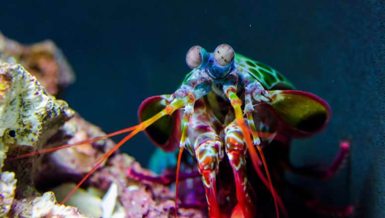

Stomatopoda (ou estomatópode), chamados popularmente de tamarutacas ou de lacraias-do-mar no Brasil, é
uma ordem de crustáceos marinhos da subclasse Hoplocarida, que agrupa cerca de 400 espécies,
caracterizadas principalmente pela morfologia da segunda pata torácica, que é modificada em apêndice
subquelado, lembrando uma pata de louva-a-deus.
Classificação científica
Reino: Animalia
Filo: Arthopoda
Subfilo: Crustáceos
Classe: Malacostraca
Subclasse: Hoplocarida
Ordem: Stomatopoda
1. Todas as espécies de camarão mantis podem ser divididas em 'spearers' ou 'smashers', com base nos
tipos de garras que possuem e nas táticas que usam para matar a presa.
Os lanceiros têm apêndices espinhosos com pontas farpadas, que são usados para esfaquear presas de
corpo mole, como diferentes tipos de vermes e peixes.

2. Podem socar com a mesma velocidade de um tiro de um rifle calibre .22.
O camarão mantis esmagador tem dois apêndices raptoriais (chamados de “clavas de dáctilo”) na frente do
corpo que ele usa para socar sua presa. Esses punhos são carregados com molas, capazes de acelerar de
seu corpo a mais de 80 km h, entregando uma força de mais de 1.500 newtons , o suficiente para esmagar
caranguejos e conchas de moluscos.
Isso é 2,5k vezes a força do próprio peso do camarão, se um humano pudesse fazer isso, eles seriam
capazes de perfurar aço.
3. Sua punção é tão rápida que resulta em bolhas de 'cavitação'. Esta é uma bolha superaquecida e um
pequeno flash de luz, que por frações de segundos também gera temperaturas de 4.400 °C (que é quase tão
quente quanto o sol) na água circundante.
Quando as bolhas colapsam, elas causam uma onda de choque intensa que é como um soco duplo e pode
atordoar, desmembrar ou matar a presa instantaneamente - mesmo se o camarão mantis errar o alvo.
4. O camarão louva-a-deus é consumido nas culinárias japonesa, cantonesa, vietnamita, mediterrânea, filipina e havaiana.
Após o cozimento, sua polpa fica mais próxima da lagosta tahn camarão. Na cultura asiática, muitas vezes são fritos com alho e pimenta.
5. Eles são mais velhos que os dinossauros.
Os estomatópodes começaram a evoluir independentemente de outros membros da classe Malacostraca há quase
400 milhões de anos, cerca de 170 milhões de anos antes dos dinossauros.